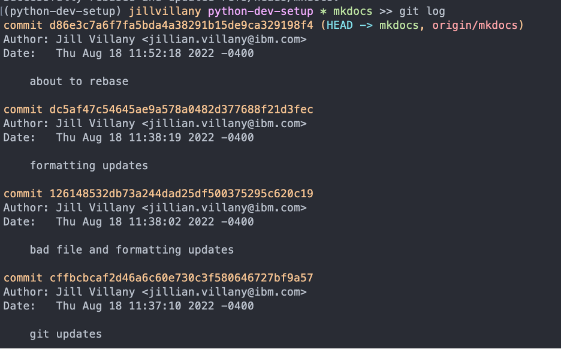
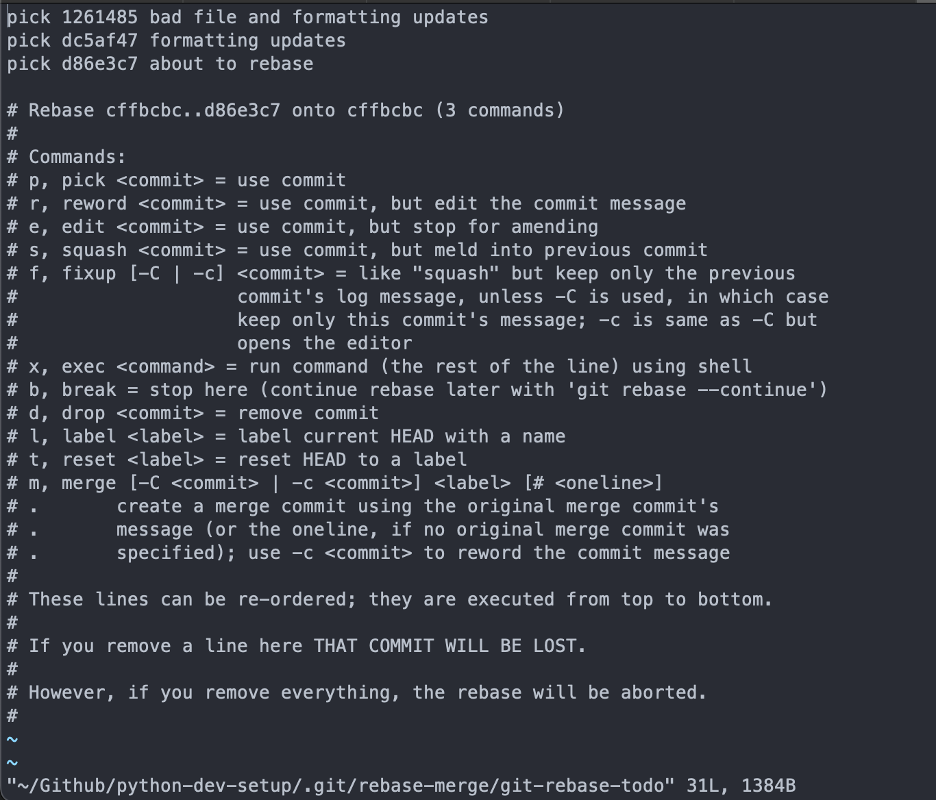
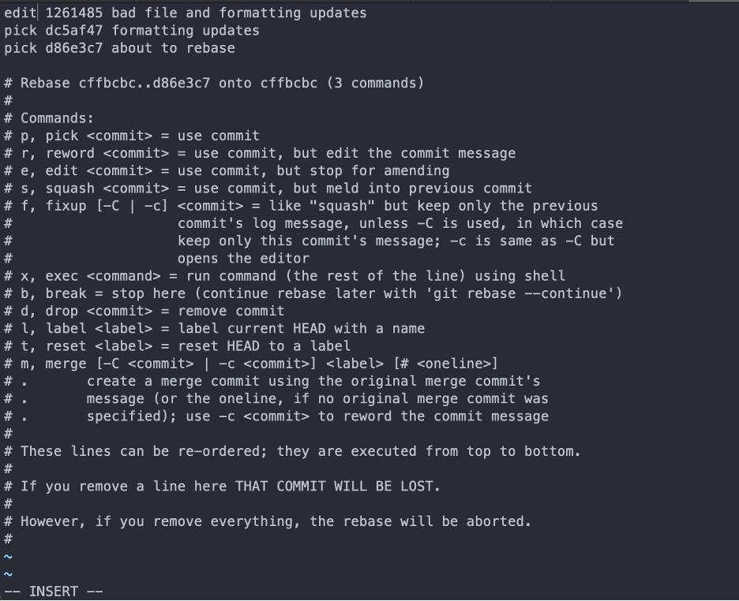
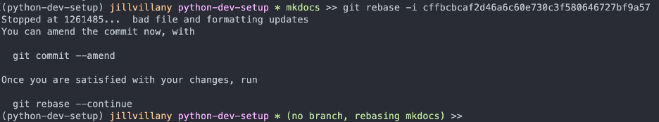
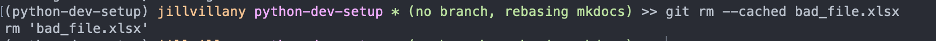
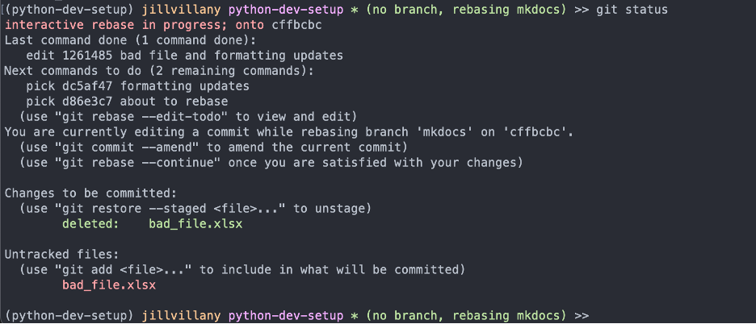
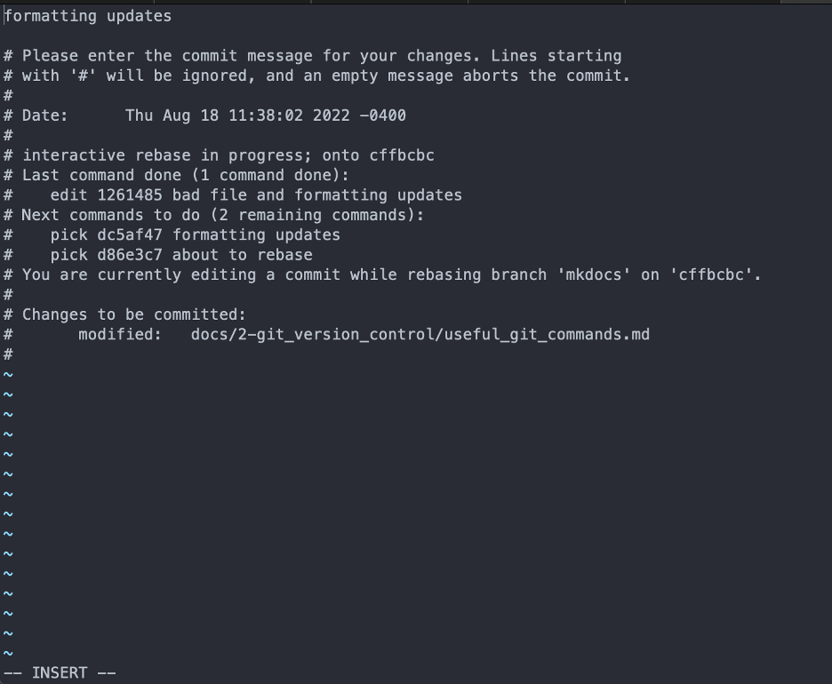
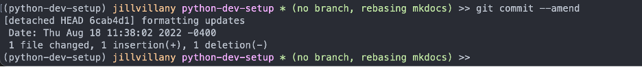
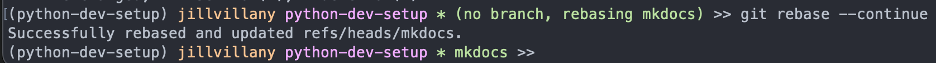
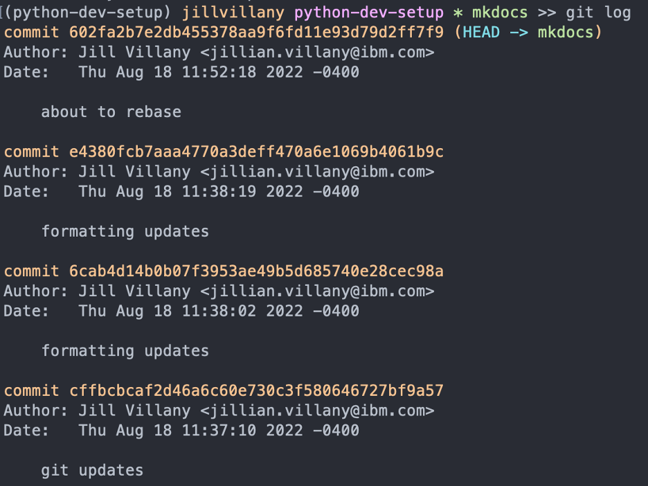

Useful Git Commands
Get Repo¶
Clone repo with SSH auth¶
IMP NOTE: If you are an SSH config file so multiple git users can be on the same machine (i.e. as done in instructions above), you must modify the SSH URL git provides
For example, in git@github.com:jillvillany/python-dev-setup.git replace ".com" with "-{username}" -> git@github-jillvillany:jillvillany/python-dev-setup.git
- Select SSH when you clone the code and copy the URL
- Enter the command
git clone {SSH URL}- For example:
git clone git@github.com:jillvillany/python-dev-setup.git 
- For example:

Switch Repo to SSH auth¶
- Set the remote URL to the URL used with ssh
git remote set-url origin {SSH URL}
- Now try
git push - Answer yes to the prompt and you will see git connects/ shows everything up to date without prompting for username/ password

Maintain a Forked Repo¶
To sync your forked version of the repo with the most updated version of the main repo:
git checkout master- If not already done:
git remote add upstream {ssh url} git fetch upstreamgit rebase upstream/mastergit push -u origin
File Changes¶
Add new/ modified files¶
git pull
git add {relative file path}
git commit -m "commit message"
git push
git config user.email {your email}
Amend last commit message¶
git commit --amend
See text of unpushed commit¶
git cherry -v
Undo all local changes to the checked out branch¶
git stash
Undo local changes to a particular file¶
git checkout --{file name}
Branches¶
Create & Publish a New Branch¶
git checkout -b {branch name} {branch making new branch from}
git push -u origin {branch name}
Archive & Delete a Branch¶
git tag archive/{branchname} {branchname}
git push origin --tags
git branch -d {branchname}
git push -d origin {branch_name}
NOTE: If need to delete a created tag
git tag -d
archive_branch.sh¶
The process of archiving numerous branches can get tedious. See the archive_branch.sh script for an automated way to archive branches.
Restore an archived branch¶
git checkout -b {branch name} archive/{archived branch name}
Merges¶
Abort a merge¶
git merge --abort
Ours vs Theirs¶
You can choose to use the version of the file on your active branch (--ours) or the branch you are merging in (--theirs)
For example:
git checkout --ours {path to file}
git add {path to file}
Undo¶
Revert to a previous commit¶
git revert {commit hash}
Revert specific file to previous commit¶
Reference: https://ohshitgit.com/
# find a hash for a commit before the file was changed
git log
# use the arrow keys to scroll up and down in history
# once you've found your commit, save the hash
git checkout [saved hash] -- path/to/file
# the old version of the file will be in your index
git commit -m "Wow, you don't have to copy-paste to undo"
Undo last commit - keep changes in staged¶
git reset HEAD~ --soft
Remove file added before last commit¶
If you accidentally add a file with PII or a file that should be stored with git-lfs, this is super helpful!
See the following Medium Article for context: Tutorial: Removing Large Files from Git
- Identify the commit before the mistake was made
git log
This will show you all the commits from the branch you are on with the latest first: 
Once you find the last good commit - in this case the "git updates" commit before the "bad file" was added - close out of the git log by typing wq
-
Initiate a rebase between the last good commit and the current commit
IMPORTANT NOTE: You can abort a rebase at any time withgit rebase -i cffbcbcaf2d46a6c60e730c3f580646727bf9a57git rebase --abort -
You will be brought into vim where all the commits after the last good commit (here the first 3 lines) are displayed. All the other stuff is just instructions. 
-
You want to edit the first commit with the bad file and pick (i.e. keep without changes) the other two.
- Type
ito enter insert mode - Delete pick and write edit
- Press
escto exit insert mode - Type
:wqto save - 
- Type
-
You are now in a detached, temporary space 
-
Remove the file from git
git rm --cached bad_file.xlsx -
Delete the file (or add it to git lfs files ). You need to do this becuase if you git status, you will see the file as an untracked file. 
- NOTE: The steps for adding a file to git lfs are:
git lfs track {path to file}- This should update your
.gitattributesfile - rungit statusto check
- This should update your
git add .gitattribtuesgit add {path to file}
- NOTE: The steps for adding a file to git lfs are:
-
Now that you are done with the changes to the commit, amend the commit:
git commit --amend -
Use vim to edit the text of the commit from "bad file and formatting updates" to "formatting updates"
- Type
ito enter insert mode - Press
escto exit insert mode - Type
:wqto close and save 
- Type
-
Once you save and close the commit amend, you will see the below: 
-
Continue the rebase (it will go until the next edit commit or complete if nothing left to edit). In our case, we have nothing else to edit, so the rebase completes successfully.
git rebase --continue
If you git log again, you will see that commit message is updated but the rest of the history looks the same

- Push your rebased branch to the remote
git push --force
Compare¶
Compare your local branch to origin¶
git diff origin/branch name